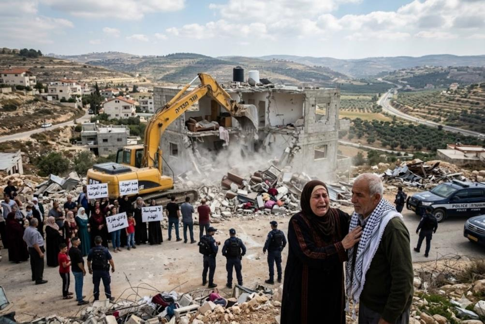
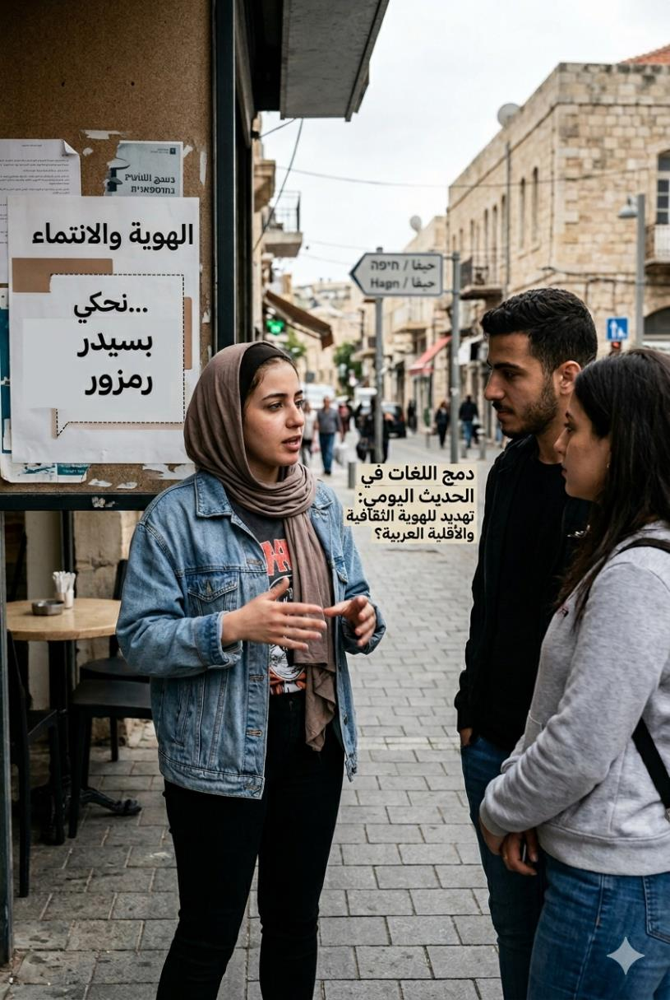
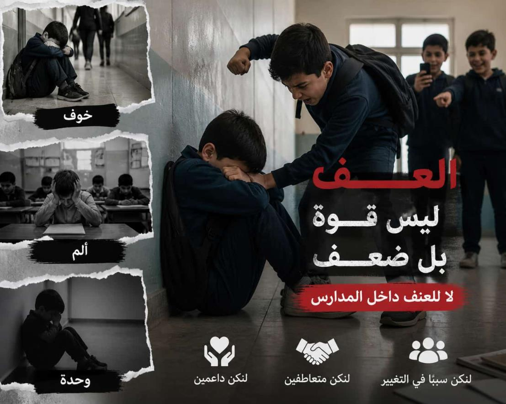
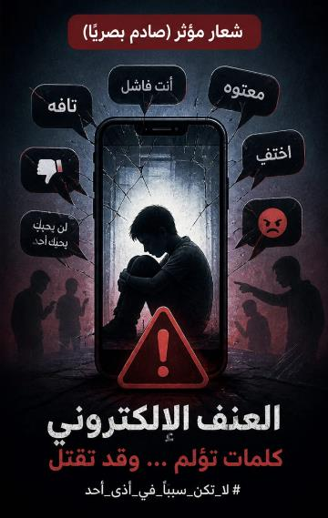
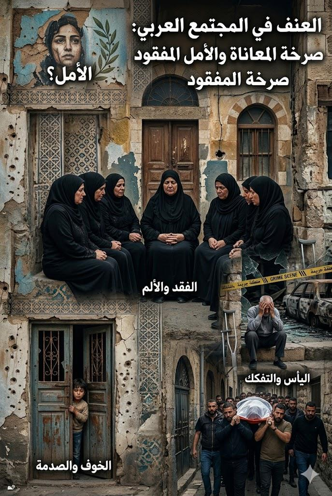

في لحظة واحدة، يتحوّل البيت من مكان للأمان والذاكرة إلى ركام صامت، وتصبح العائلة واقفة بين حجارة كانت يومًا جدرانًا تحمل ضحكاتها وأحلامها. لا تكمن المعاناة في فقدان البناء فقط، بل في فقدان الإحساس بالاستقرار والكرامة، وفي سؤال مؤلم يتكرر: إلى أين يذهب الإنسان حين يُهدم سقفه فوق ذكرياته؟ هنا تتجسد المعضلة بين القانون والإنسان، بين القرار الرسمي وحق الناس في السكن والحياة بكرامة.

معادلة حساسة بين الاندماج في المجتمع، دون الذوبان وفقدان الجذر الثقافي.

في زقاق يحمل لافتات بلغتين تقف اللغة العربية بين جيل يريد أن يثبت حضوره، وواقع يوميّ يفرض عليه التبديل والخلط في الكلام. ليست المعضلة في استعمال كلمات عبرية عابرة فقط، بل في الخوف من أن تصبح اللغة الأم أقل حضورًا في الوعي والبيت والمدرسة والشارع. تتجسد المعاناة: كيف يحافظ الإنسان العربي على لغته كجزء من هويته وانتمائه، وهو يعيش داخل فضاء يطالبه كل يوم بالتكيف؟ هنا
طلاب يعيشون بين الخوف والقلق بدل الطمأنينة، ومعلمون يحاولون الحفاظ على النظام وسط واقع يزداد تعقيدًا يومًا بعد يوم

مدارس بلا أمان... والعنف يهدد الأجيال
المدرسة التي كانت رمزًا للأمان تتحوّل تدريجيًا إلى مساحة يطغى فيها العنف، ليصبح الخوف جزءًا من يوم الطلاب بدل التعلم والطمأنينة.
هذا ليس مجرد سلوكيات طارئة ...
بل جرس إنذار حقيقي لمستقبل جيل كامل يحتاج إلى حماية واحتواء وتغيير عاجل قبل أن يفوت الأوان.
حين يتحوّل الهاتف إلى سلاح ضد الطلاب

لم يعد العنف محصورًا داخل أسوار المدرسة، بل امتد إلى العالم الرقمي حيث تتحول الكلمات والرسائل إلى أدوات أذى قاسية تترك آثارًا نفسية عميقة على الطلاب، وقد تقود في بعض الحالات إلى عواقب مأساوية تهدد حياتهم ومستقبلهم.
نزيف الصمت حين يغتال الرصاص حلم البقاء

بين مطرقة الجريمة وسندان الخوف ينزف المجتمع العربي طمأنينته. لم تعد المطالبة بالأمان مجرد نداء، بل هي صرخة وجودية ترفض الارتهان لسيادة الرصاص؛ إنها معركة استعادة الحق في الحياة، ومطالبة بانتفاضة حقيقية تقتلع جذور العنف لتبني غداً يصان فيه الدم وتتحقق فيه العدالة